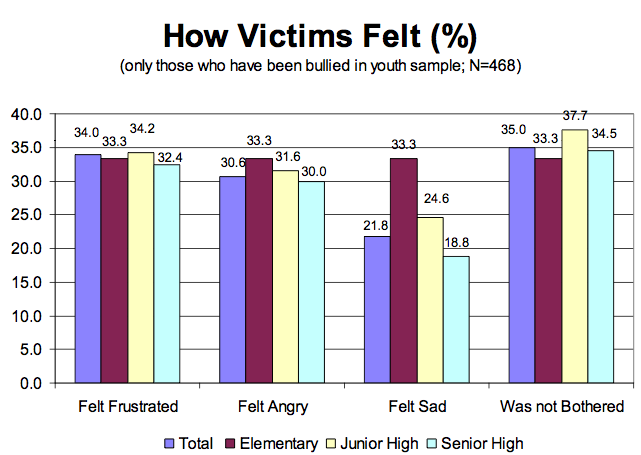
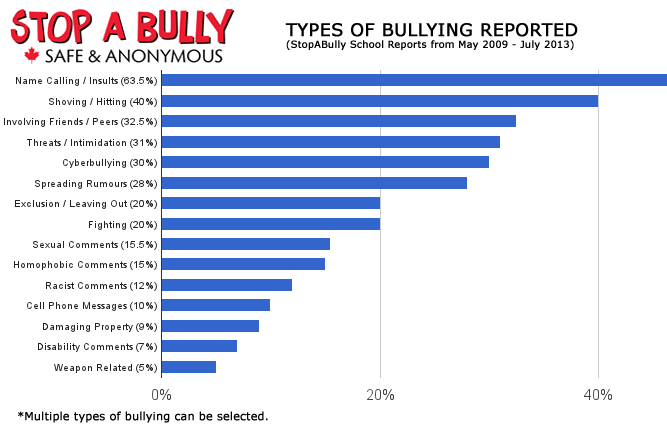

Over 3.2 million students are victims of bullying each year.
Approximately 160,000 teens skip school every day because of bullying.
17% of American students report being bullied 2 to 3 times a month or more within a school semester.
1 in 4 teachers see nothing wrong with bullying and will only intervene 4% of the time.


By age 14 less than 30% of boys and 40% of girls will talk to their peers about bullying.
71% of students report incidents of bullying as a problem at their school.
90% of 4th through 8th graders report being victims of bullying.
1 in 10 students drop out of school because of repeated bullying.
As boys age they are less and less likely to feel sympathy for victims of bullying. In fact they are more likely to add to the problem than solve it.
Physical bullying increases in elementary school, peaks in middle school and declines in high school. Verbal abuse, on the other hand, remains constant.
Over 80 percent of teens use a cell phone regularly, making it the most popular form of technology and a common medium for cyber bullying.
66% of teens who have witnessed online cruelty have also witnessed others joining; 21% say they have also joined in the harassment.